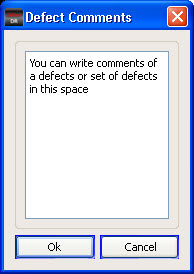

You can edit
comments of a single defect or set of defects after selecting the
defects from the Defect List or the Defect Map.
Procedure
- In the Defect Classification
window, click the Comments button.
The presence of comments is indicated by green colored text in the Comments button. If there are
no comments, the text is grey. The Defect Comments dialog box appears.
- In the Defect Comments dialog
box, enter comments in the space provided, then click OK.
Figure 1. Defect Comments Dialog Box